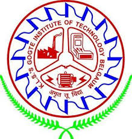

IEEE KLS Gogte Institute of Technology,Belagavi

Year of approval: 2003
Branch Counsellor: Prof. Abhishek Deshmukh (Asst. Professor at Dept of E&C Engineering)
Department Chair: Dr. Santosh S Saraf (Professor and Head Dept of E&C Engineering)
Student Branch Chair: Mr. Prasad Kadam (7th sem ECE)
With just 4-5 members as active IEEE members in the year 1985, the IEEE Student Branch KLS’s GIT has grown big. As an active student branch of the North Karnataka Sub-Section, it has also helped few dormant student branches to revive itself and also guided new institutes to start a student branch. Earlier the members of the branch use to publish technical papers only. With its member strength growing, student activities and student technical symposiums were initiated. Gaining experiences from old conferences like GITCON in 90’s to INFINITY in 2004, IEEE Student Branch has come a long way in contributing to IEEE Community. Following are some details:
PAANCHAJANYA: GIT student branch started its annual flagship event PAANCHAJANYA from 2006. The idea of Paanchajanya was conceived with the intention of bettering the techno-managerial skills of the students. Along with this aim it is also organized with the motto- ‘EDUTAINMENT’. The word “Paanchajanya” was coined by the students Mr. Anurag Agarwal and his team, which is the name of the conch of lord Krishna used in the war of Mahabharata. This conch and its sound symbolises victory of dharma over adharma, superiority of light over darkness. This annual flagship event became very popular and students across various engineering institutes of the region use to eagerly wait for this technical symposium. It is being organized every year since 2006.
ALL INDIA CONGRESS: After establishing PAANCHAJNYA, student branch expanded its activities for the whole year. Since 2011, Student branch members are representing the institute at ALL INDIA level.
HUB LEVEL: GIT student branch was one of the 3 institutes (KLS’s GIT Belagavi, KLE CET Belagavi, MMEC Belagavi) who hosted the first North Karnataka Hub event i-GREEEN in 2013. GIT student branch holds the honours of hosting the first North Karnataka Student Young Professionals WIE Congress in the year 2016.
SPECTRUM DAYS: Small events like Spectrum Days where technical talks are organised for student members by the EXECOM team.
IEEE DAY: Birthday of IEEE is celebrated every first Tuesday of October. At the student branch IEEE DAY is celebrated along with Technical debates, poster presentations, cake cutting ceremony etc.
Members also participate in IEEEXTREME an online coding competition which runs for 24 hours. It is conducted every year in the month of October. In the past competitions our members have won at National/ International level.
WORKSHOPS: The student branch has organised workshops from 1-day to 1-week duration. Few recent ones are: MATLAB for Signal Processing by MATHWORKS, 2-days September 2013; HAM Radio- a scientific hobby 1-day April 2017; IOT on Raspberry Pi 1-week Jan 2017. Few more which were a part of PAANCHAJANYA too.
WIE: WIE affinity group also is active at the branch with its separate office bearers. Every year Women’s Day is celebrated on 8th March. It was named SPIRITONICA and a 1-day event was conducted in the year 2012. Since then till 2015 SPIRITONICA has been celebrated on every Women’s Day. Since past 2 years it is named TRIGARTI and spirit of Womanhood is celebrated. Apart from this panel discussions and debate were organised on the following topics: women empowerment; issues faced by women employees; careers for women in engineering etc. Recently the WIE affinity group celebrated UDAAN on 7th March 2020. Since 2 years the group appreciates the lady staffs of the institute by honouring them with essentials as a token of gratitude.
FUTURE PLANS:
Student Branch will eye for achieving best Branch; best BC; best Branch Website etc. awards at Section and Region level.
The Branch will keep an objective of hosting All India Students Congress; WIE National Summit in the next 5 years.
The Branch will collaborate with industries nearby and file online petition for starting a Technical Society or Chapter and organize ONE International Conference in the future.
The Branch will try to conduct compulsory ONE humanitarian event every year and make it a flagship event to support society and stay with IEEE motto: Advancing technology for humanity.